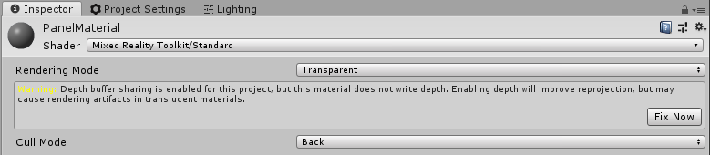
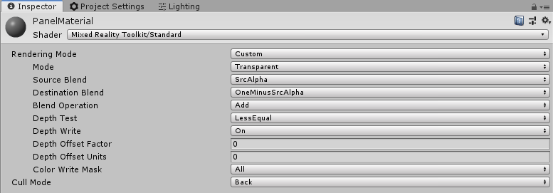
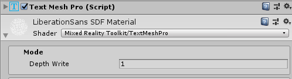

全息图稳定
性能
为了使基础的混合现实平台和设备产生最佳结果，实现执行帧率很重要。目标帧率（例如：60 FPS或90 FPS）将因平台和设备而异。但是，足够帧率的混合现实应用程序将具有稳定的全息图以及有效的头部跟踪，手部跟踪等功能。
环境追踪
稳定的全息渲染在很大程度上取决于平台和设备的头部姿势跟踪。在每一帧中，Unity根据基础平台估计并提供的摄像机姿势来渲染场景。如果此跟踪未正确跟随实际的头部运动，则全息图将在视觉上显得不准确。对于像HoloLens这样的AR设备，用户可以将虚拟全息图与现实世界联系起来，这一点尤其明显和重要。性能对于可靠的头部跟踪很重要，但是也存在其他重要的环境注意事项。影响用户体验的环境元素的类型将取决于目标平台的具体情况。
Windows混合现实
Windows Mixed Reality平台提供了一些参考资料用于平台上的全息图稳定。尽管开发人员可以使用一些关键工具来改善用户的全息图视觉体验。
深度缓冲区共享
Unity开发人员可以选择与平台共享应用程序的深度缓冲区。这提供了当前帧存在全息图的信息，平台可以通过称为Late-Stage Reprojection的硬件辅助过程利用该信息来使全息图稳定。
Late-Stage Reprojection
在渲染帧结束时，Windows Mixed Reality平台将获取应用程序生成的颜色和深度渲染目标，并转换最终的屏幕输出，以解决自上一次头部姿势预测以来任何轻微的头部运动。应用程序的游戏循环需要时间才能执行。例如，在60 FPS时，这意味着应用程序花费了约16.667ms来渲染一帧。即使这似乎是微不足道的时间，用户的头部位置和方向也将发生变化，从而为渲染中的相机产生新的投影矩阵。Late-Stage Reprojection会转换最终图像中的像素，以解决这一新问题。
Per-pixel vs stabilization plane LSR
根据Windows混合现实设备上运行的设备端点和操作系统版本，Late-Stage Reprojection算法将按像素执行或通过稳定平面.
基于每个像素的深度
基于每个像素深度的重新投影涉及利用深度缓冲区来修改每个像素的图像输出，从而使全息图稳定在各种距离处。例如，距离1m的球体可能在距离10m的柱子前面。如果用户将头部稍微倾斜，则表示球体的像素将与表示柱子的较远像素具有不同的变换。每像素重投影将考虑每个像素的距离差异，以实现更准确的重投影。
稳定面
如果不可能创建一个精确的深度缓冲区与平台共享，则另一种形式的LSR使用稳定平面。场景中的所有全息图都将获得一定的稳定性，但是位于所需平面中的全息图将获得最大的硬件稳定性。可以通过HolographicSettings.SetFocusPointForFrame将平面的点和法线提供给平台。Unity提供的API.
深度缓冲区格式
如果以HoloLens为开发目标，则强烈建议使用16位深度缓冲格式而不是24位深度缓冲格式。尽管深度值的精度较低，但这可以极大地节省性能。弥补较低的精度并避免z-fighting，建议减少far clip plane从Unity设置的1000m默认值开始。
[!注意] 如果使用16位深度格式，则模板缓冲区所需的效果将不起作用，因为在这种情况下Unity不创建模板缓冲区。相反，选择24位深度格式通常会创建一个8位模板缓冲器（如果适用于端点图形平台。
Unity中的深度缓冲区共享
为了利用基于深度的LSR，开发人员需要采取两个重要步骤。
- 在 Edit > Project Settings > Player > XR Settings > Virtual Reality SDKs >下启用 Depth Buffer Sharing
- 如果以HoloLens为目标，建议也选择16位深度格式
- 在屏幕上渲染颜色时，也要渲染深度
不透明的游戏对象在Unity中，通常会自动写入深度。但是，默认情况下，透明和文本对象通常不会写入深度。如果使用MRTK标准着色器或Text Mesh Pro，则可以很容易地对其进行补救。
[!注意] 为了快速确定场景中哪些对象没有可视地写入深度缓冲区，可以使用Render Depth Buffer utility在“MRTK Configuration profile”配置文件中的Editor Settings下。
透明MRTK标准着色器
对于透明材料，使用MRTK标准着色器r, 选择要在Inspector窗口中查看的材料。然后单击Fix Now 按钮以将材质转换为写入深度（即Z-Write On）。
之前

后

Text Mesh Pro
对于Text Mesh Pro对象，选择TMP GameObject以在检查器中查看它。在材质组件下，切换指定材质的着色器以使用MRTK TextMeshPro着色器。

自定义着色器
如果要编写自定义着色器，请添加ZWrite flag到Pass块定义的顶部以配置着色器以写入深度缓冲区。
Shader "Custom/MyShader"
{
SubShader
{
Pass
{
...
ZWrite On
...
}
}
}
不透明的支持
如果上述方法不适用于给定场景（即使用Unity UI），则可能有另一个对象写入深度缓冲区。一个常见的示例是在场景的浮动面板上使用Unity UI文本。通过使面板不透明或至少写到一定深度，文本和面板都将被平台稳定，因为它们的z值非常接近。
WorldAnchors (HoloLens)
除了确保满足正确的配置以确保视觉稳定性外，重要的是要确保全息图在其正确的物理位置保持稳定。为了在物理空间中的重要位置通知平台，开发人员可以利用WorldAnchors 在需要留在一个地方的GameObjects上.=WorldAnchor是添加到GameObject的一种组件，该组件可以完全控制该对象的变换。
诸如HoloLens之类的设备正在不断扫描并了解环境。因此，随着HoloLens跟踪空间中的运动和位置，其估计值将被更新并且调整Unity坐标系.例如，如果在开始时将GameObject放置在距离摄像机1m的位置，则当HoloLens跟踪环境时，它可能会意识到GameObject所在的物理点实际上位于1.1m处。这将导致全息图漂移。将WorldAnchor应用于GameObject将使锚能够控制对象的变换，从而使对象保持在正确的物理位置（即，在运行时更新为1.1m而不是1m）。在整个应用会话中留存WorldAnchors，开发人员可以使用WorldAnchorStore来保存并加载WorldAnchors.
[!注意] 一旦将WorldAnchor组件添加到GameObject，就无法修改该GameObject的变换（即transform.position = x）。开发人员必须删除WorldAnchor才能编辑变换。
WorldAnchor m_anchor;
public void AddAnchor()
{
this.m_anchor = this.gameObject.AddComponent<WorldAnchor>();
}
public void RemoveAnchor()
{
DestroyImmediate(m_anchor);
}
建议查看